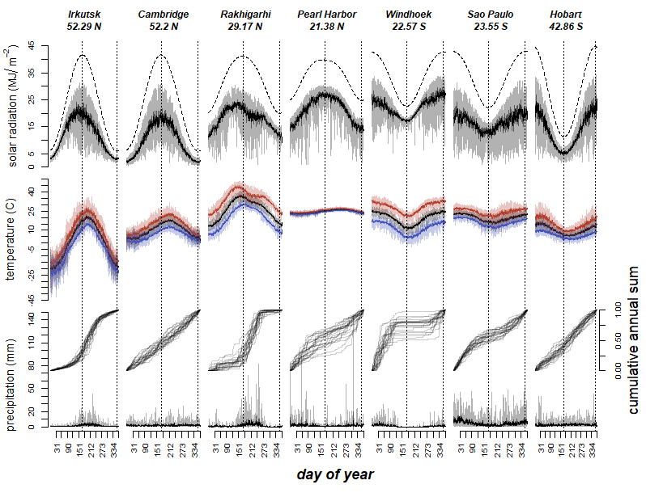
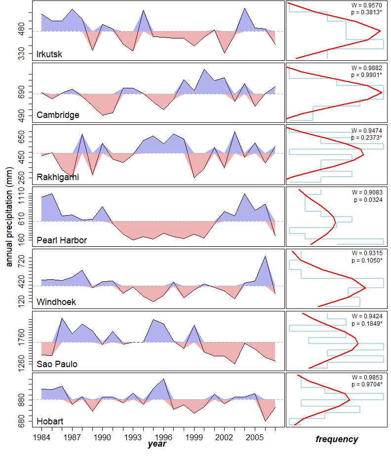

output_dir <- "output"
plot_file_format <- c("png", "eps")[1] # modify index number to change format2 Daily weather in example locations
Choose file format for generated figures:
Load source file containing the R implementation of the Weather model:
source("source/weatherModel.R")We use the data downloaded at NASA´s POWER access viewer (power.larc.nasa.gov/data-access-viewer/) selecting the user community ‘Agroclimatology’ and pin pointing the different locations between 01/01/1984 and 31/12/2007. The exact locations are:
- Rakhigarhi, Haryana, India (Latitude: 29.1687, Longitude: 76.0687)
- Irkutsk, Irkutsk Óblast, Russia (Latitude: 52.2891, Longitude: 104.2493)
- Hobart, Tasmania, Australia (Latitude: -42.8649, Longitude: 147.3441)
- Pearl Harbor, Hawaii, United States of America (Latitude: 21.376, Longitude: -157.9708)
- São Paulo, Brazil (Latitude: -23.5513, Longitude: -46.6344)
- Cambridge, United Kingdom (Latitude: 52.2027, Longitude: 0.122)
- Windhoek, Namibia (Latitude: -22.5718, Longitude: 17.0953)
We selected the ICASA Format’s parameters:
- Precipitation (PRECTOT)
- Wind speed at 2m (WS2M)
- Relative Humidity at 2m (RH2M)
- Dew/frost point at 2m (T2MDEW)
- Maximum temperature at 2m (T2M_MAX)
- Minimum temperature at 2m (T2M_MIN)
- All sky insolation incident on a horizontal surface (ALLSKY_SFC_SW_DWN)
- Temperature at 2m (T2M)
and from Solar Related Parameters:
- Top-of-atmosphere Insolation (ALLSKY_TOA_SW_DWN)
# Function to read and filter weather data
read_weather_data <- function(file_path) {
data <- read.csv(file_path, skip = 18)
data[data$YEAR %in% 1984:2007, ]
}
# Get input file paths
input_files <- list.files(path = "input", full.names = TRUE)
# Read and combine all weather data
weather <- do.call(rbind, lapply(input_files, read_weather_data))
# Define site mapping
site_mapping <- list(
list(condition = function(x) floor(x$LAT) == 29, site = "Rakhigarhi"),
list(condition = function(x) floor(x$LON) == 104, site = "Irkutsk"),
list(condition = function(x) floor(x$LAT) == -43, site = "Hobart"),
list(condition = function(x) floor(x$LAT) == 21, site = "Pearl Harbor"),
list(condition = function(x) floor(x$LAT) == -24, site = "Sao Paulo"),
list(condition = function(x) floor(x$LON) == 0, site = "Cambridge"),
list(condition = function(x) floor(x$LAT) == -23, site = "Windhoek")
)
# Assign sites based on latitude and longitude
weather$Site <- NA
for (mapping in site_mapping) {
weather$Site[mapping$condition(weather)] <- mapping$site
}
# Calculate summary statistics
years <- unique(weather$YEAR)
number_of_years <- length(years)Prepare display order according to latitude:
# Create a function to format latitude
format_latitude <- function(lat) {
paste(abs(round(lat, 2)), ifelse(lat < 0, "S", "N"))
}
# Create and process sites_latitude data frame
sites_latitude <- data.frame(
Site = unique(weather$Site),
Latitude = as.numeric(unique(weather$LAT))
)
# Sort sites_latitude by descending latitude
sites_latitude <- sites_latitude[order(-sites_latitude$Latitude), ]
# Format latitude values
sites_latitude$Latitude <- sapply(sites_latitude$Latitude, format_latitude)
# calculate easy references to sites
sites <- sites_latitude$Site
number_of_sites <- length(sites)Print summary:
cat("Number of sites:", number_of_sites, "\n")Number of sites: 7 cat("Sites:", paste(sites, collapse = ", "), "\n")Sites: Irkutsk, Cambridge, Rakhigarhi, Pearl Harbor, Windhoek, Sao Paulo, Hobart cat("Number of years:", number_of_years, "\n")Number of years: 24 cat("Years:", paste(range(years), collapse = " - "), "\n")Years: 1984 - 2007 Compute statistics for each site and day of year:
# Define summary statistics function
calculate_summary <- function(data, column) {
c(mean = mean(data[[column]], na.rm = TRUE),
sd = sd(data[[column]], na.rm = TRUE),
max = max(data[[column]], na.rm = TRUE),
min = min(data[[column]], na.rm = TRUE),
error = qt(0.975, length(data[[column]]) - 1) *
sd(data[[column]], na.rm = TRUE) /
sqrt(length(data[[column]])))
}
# Initialize weather_summary as a data frame
weather_summary <- data.frame(
Site = character(),
dayOfYear = integer(),
solarRadiation.mean = numeric(),
solarRadiation.sd = numeric(),
solarRadiation.max = numeric(),
solarRadiation.min = numeric(),
solarRadiation.error = numeric(),
solarRadiationTop.mean = numeric(),
temperature.mean = numeric(),
temperature.sd = numeric(),
temperature.max = numeric(),
temperature.min = numeric(),
temperature.error = numeric(),
maxTemperature.mean = numeric(),
maxTemperature.max = numeric(),
maxTemperature.min = numeric(),
maxTemperature.error = numeric(),
minTemperature.mean = numeric(),
minTemperature.max = numeric(),
minTemperature.min = numeric(),
minTemperature.error = numeric(),
temperature.lowerDeviation = numeric(),
temperature.lowerDeviation.error = numeric(),
temperature.upperDeviation = numeric(),
temperature.upperDeviation.error = numeric(),
precipitation.mean = numeric(),
precipitation.max = numeric(),
precipitation.min = numeric(),
precipitation.error = numeric()
)
# Pre-allocate the weather_summary data frame
total_rows <- length(sites) * 366
weather_summary <- weather_summary[rep(1, total_rows), ]
# Main loop
row_index <- 1
for (site in sites) {
for (day in 1:366) {
temp_data <- weather[weather$Site == site & weather$DOY == day, ]
if (nrow(temp_data) == 0) next
weather_summary[row_index, "Site"] <- site
weather_summary[row_index, "dayOfYear"] <- day
# Solar radiation
solar_summary <- calculate_summary(temp_data, "ALLSKY_SFC_SW_DWN")
weather_summary[row_index, c("solarRadiation.mean", "solarRadiation.sd",
"solarRadiation.max", "solarRadiation.min",
"solarRadiation.error")] <- solar_summary
weather_summary[row_index, "solarRadiationTop.mean"] <- mean(temp_data$ALLSKY_TOA_SW_DWN, na.rm = TRUE)
# Temperature
temp_summary <- calculate_summary(temp_data, "T2M")
weather_summary[row_index, c("temperature.mean", "temperature.sd",
"temperature.max", "temperature.min",
"temperature.error")] <- temp_summary
# Max temperature
max_temp_summary <- calculate_summary(temp_data, "T2M_MAX")
weather_summary[row_index, c("maxTemperature.mean", "maxTemperature.max",
"maxTemperature.min", "maxTemperature.error")] <- max_temp_summary[c("mean", "max", "min", "error")]
# Min temperature
min_temp_summary <- calculate_summary(temp_data, "T2M_MIN")
weather_summary[row_index, c("minTemperature.mean", "minTemperature.max",
"minTemperature.min", "minTemperature.error")] <- min_temp_summary[c("mean", "max", "min", "error")]
# Temperature deviations
lower_dev <- temp_data$T2M - temp_data$T2M_MIN
upper_dev <- temp_data$T2M_MAX - temp_data$T2M
weather_summary[row_index, "temperature.lowerDeviation"] <- mean(lower_dev, na.rm = TRUE)
weather_summary[row_index, "temperature.lowerDeviation.error"] <- qt(0.975, length(lower_dev) - 1) *
sd(lower_dev, na.rm = TRUE) / sqrt(length(lower_dev))
weather_summary[row_index, "temperature.upperDeviation"] <- mean(upper_dev, na.rm = TRUE)
weather_summary[row_index, "temperature.upperDeviation.error"] <- qt(0.975, length(upper_dev) - 1) *
sd(upper_dev, na.rm = TRUE) / sqrt(length(upper_dev))
# Precipitation
precip_summary <- calculate_summary(temp_data, "PRECTOT")
weather_summary[row_index, c("precipitation.mean", "precipitation.max",
"precipitation.min", "precipitation.error")] <- precip_summary[c("mean", "max", "min", "error")]
row_index <- row_index + 1
}
}
# Remove any unused rows
weather_summary <- weather_summary[1:(row_index-1), ]Set colours for maximum and minimum temperature:
max_temperature_colour = hsv(7.3/360, 74.6/100, 70/100)
min_temperature_colour = hsv(232/360, 64.6/100, 73/100)Create figure:
# Constants
YEAR_LENGTH <- 366
SOLSTICE_SUMMER <- 172 # June 21st (approx.)
SOLSTICE_WINTER <- 355 # December 21st (approx.)
# Helper functions
round_to_multiple <- function(x, base, round_fn = round) {
round_fn(x / base) * base
}
create_polygon <- function(x, y1, y2, alpha = 0.5, col = "black") {
polygon(c(x, rev(x)), c(y1, rev(y2)), col = adjustcolor(col, alpha = alpha), border = NA)
}
plot_weather_variable <- function(x, y, ylim, lwd, col = "black", lty = 1) {
plot(x, y, axes = FALSE, ylim = ylim, type = "l", lwd = lwd, col = col, lty = lty)
}
add_confidence_interval <- function(x, y_mean, error, col, alpha = 0.5) {
create_polygon(x, y_mean + error, y_mean, alpha, col)
create_polygon(x, y_mean - error, y_mean, alpha, col)
}
add_min_max_interval <- function(x, y_mean, y_min, y_max, col, alpha = 0.3) {
create_polygon(x, y_max, y_mean, alpha, col)
create_polygon(x, y_min, y_mean, alpha, col)
}
# Main plotting function
plot_weather_summary <- function(weather_summary, sites, sites_latitude, weather) {
# Setup plot
num_columns <- length(sites) + 1
num_rows_except_bottom <- 4
layout_matrix <- rbind(
matrix(1:(num_columns * num_rows_except_bottom), nrow = num_rows_except_bottom, ncol = num_columns, byrow = FALSE),
c((num_columns * num_rows_except_bottom) + 1, rep((num_columns * num_rows_except_bottom) + 2, length(sites)))
)
layout(layout_matrix,
widths = c(3, 12, rep(10, length(sites) - 2), 14),
heights = c(3, 10, 10, 12, 2))
# Y-axis labels
y_labs <- c(expression(paste("solar radiation (", MJ/m^-2, ")")),
"temperature (C)", "precipitation (mm)")
# Calculate ranges
range_solar <- c(
round_to_multiple(min(weather_summary$solarRadiation.min), 5, floor),
round_to_multiple(max(weather_summary$solarRadiationTop.mean), 5, ceiling)
)
range_temp <- c(
round_to_multiple(min(weather_summary$minTemperature.min), 5, floor),
round_to_multiple(max(weather_summary$maxTemperature.max), 5, ceiling)
)
range_precip <- c(
round_to_multiple(min(weather_summary$precipitation.min), 5, floor),
round_to_multiple(max(weather_summary$precipitation.max), 5, ceiling)
)
# Plot settings
par(cex = graphic_scale, cex.axis = graphic_scale * (0.8 + axis_text_rescale))
# First column: y axis titles
for (i in 1:4) {
par(mar = c(0, 0, 0, 0.4))
plot(c(0, 1), c(0, 1), ann = FALSE, bty = 'n', type = 'n', xaxt = 'n', yaxt = 'n')
if (i > 1) {
text(x = 0.5, y = 0.5, font = 4,
cex = graphic_scale * (1.2 + font_rescale),
srt = 90,
labels = y_labs[i-1])
}
}
# Plot for each site
for (site in sites) {
temp_data <- weather_summary[weather_summary$Site == site,]
left_plot_margin <- ifelse(site == sites[1], 2, 0.1)
right_plot_margin <- ifelse(site == sites[length(sites)], 4, 0.1)
# Site name + latitude
par(mar = c(0.2, left_plot_margin, 0.1, right_plot_margin))
plot(c(0, 1), c(0, 1), ann = FALSE, bty = 'n', type = 'n', xaxt = 'n', yaxt = 'n')
text(x = 0.5, y = 0.5, font = 4,
cex = graphic_scale * (1 + font_rescale),
labels = paste(site, sites_latitude$Latitude[sites_latitude$Site == site], sep = "\n"))
# Solar radiation
par(mar = c(0.1, left_plot_margin, 0.1, right_plot_margin))
plot_weather_variable(1:YEAR_LENGTH, temp_data$solarRadiation.mean, range_solar, graphic_scale)
add_confidence_interval(1:YEAR_LENGTH, temp_data$solarRadiation.mean, temp_data$solarRadiation.error, "black")
add_min_max_interval(1:YEAR_LENGTH, temp_data$solarRadiation.mean, temp_data$solarRadiation.min, temp_data$solarRadiation.max, "black")
lines(1:YEAR_LENGTH, temp_data$solarRadiationTop.mean, lty = 2, lwd = graphic_scale)
abline(v = c(SOLSTICE_SUMMER, SOLSTICE_WINTER), lty = 3, lwd = graphic_scale)
if (site == sites[1]) {
axis(2, at = seq(range_solar[1], range_solar[2], 5))
}
# Temperature
plot_weather_variable(1:YEAR_LENGTH, temp_data$temperature.mean, range_temp, graphic_scale)
add_confidence_interval(1:YEAR_LENGTH, temp_data$temperature.mean, temp_data$temperature.error, "black")
add_min_max_interval(1:YEAR_LENGTH, temp_data$temperature.mean, temp_data$temperature.min, temp_data$temperature.max, "black")
lines(1:YEAR_LENGTH, temp_data$maxTemperature.mean, lwd = graphic_scale, col = max_temperature_colour)
add_confidence_interval(1:YEAR_LENGTH, temp_data$maxTemperature.mean, temp_data$maxTemperature.error, col = max_temperature_colour)
add_min_max_interval(1:YEAR_LENGTH, temp_data$maxTemperature.mean, temp_data$maxTemperature.min, temp_data$maxTemperature.max, max_temperature_colour)
lines(1:YEAR_LENGTH, temp_data$minTemperature.mean, lwd = graphic_scale, col = min_temperature_colour)
add_confidence_interval(1:YEAR_LENGTH, temp_data$minTemperature.mean, temp_data$minTemperature.error, min_temperature_colour)
add_min_max_interval(1:YEAR_LENGTH, temp_data$minTemperature.mean, temp_data$minTemperature.min, temp_data$minTemperature.max, min_temperature_colour)
abline(v = c(SOLSTICE_SUMMER, SOLSTICE_WINTER), lty = 3, lwd = graphic_scale)
if (site == sites[1]) {
axis(2, at = seq(range_temp[1], range_temp[2], 5))
}
# Precipitation
par(mar = c(8, left_plot_margin, 0.1, right_plot_margin))
plot(c(1, YEAR_LENGTH), c(0, 1), ann = FALSE, bty = 'n', type = 'n', xaxt = 'n', yaxt = 'n')
for (year in unique(weather$YEAR)) {
site_year_data <- weather[weather$Site == site & weather$YEAR == year, ]
lines(1:nrow(site_year_data),
cumsum(site_year_data$PRECTOT) / sum(site_year_data$PRECTOT),
lwd = graphic_scale,
col = rgb(0, 0, 0, alpha = 0.2))
}
if (site == sites[length(sites)]) {
axis(4, at = seq(0, 1, 0.25))
mtext("cumulative annual sum", 4, line = 2.5, cex = graphic_scale * (1.5 + margin_text_rescale))
}
par(new = TRUE, mar = c(3, left_plot_margin, 0.1, right_plot_margin))
plot_weather_variable(1:YEAR_LENGTH, temp_data$precipitation.mean, range_precip, graphic_scale)
add_confidence_interval(1:YEAR_LENGTH, temp_data$precipitation.mean, temp_data$precipitation.error, "black")
add_min_max_interval(1:YEAR_LENGTH, temp_data$precipitation.mean, temp_data$precipitation.min, temp_data$precipitation.max, "black")
# Add solstices and axes
abline(v = c(SOLSTICE_SUMMER, SOLSTICE_WINTER), lty = 3, lwd = graphic_scale)
if (site == sites[1]) {
axis(2, at = seq(range_precip[1], range_precip[2], 10))
}
axis(1, at = cumsum(c(31, 28, 31, 30, 31, 30, 31, 31, 30, 31, 30, 31)), las = 2)
}
# Bottom row: "day of year" label
par(mar = c(0, 0, 0, 0))
plot(c(0, 1), c(0, 1), ann = FALSE, bty = 'n', type = 'n', xaxt = 'n', yaxt = 'n')
plot(c(0, 1), c(0, 1), ann = FALSE, bty = 'n', type = 'n', xaxt = 'n', yaxt = 'n')
text(x = 0.5, y = 0.7, font = 4,
cex = graphic_scale * (1.5 + font_rescale),
labels = "day of year")
}
# Main execution
plot_name <- file.path(output_dir, paste0("Fig1-annualWeatherVariablesExamples.", plot_file_format))
if (plot_file_format == "png") {
graphic_scale <- 1
font_rescale <- axis_text_rescale <- margin_text_rescale <- 0
png(plot_name, width = number_of_sites * graphic_scale * 114, height = graphic_scale * 610)
} else if (plot_file_format == "eps") {
graphic_scale = 1.2
font_rescale = -0.2
axis_text_rescale = -0.1
margin_text_rescale = -0.5
extrafont::loadfonts(device = "postscript")
grDevices::cairo_ps(filename = plot_name ,
pointsize = 12,
width = number_of_sites * graphic_scale * 1.5,
height = graphic_scale * 8,
onefile = FALSE,
family = "sans"
)
}
plot_weather_summary(weather_summary, sites, sites_latitude, weather)
dev.off()svg
2 knitr::include_graphics(plot_name)
Compute annual precipitation for each site and year:
# Initialize the result data frame
annual_precipitation <- data.frame(
Site = character(),
year = numeric(),
precipitation.annual = numeric(),
stringsAsFactors = FALSE
)
# Compute annual precipitation
for (site in sites) {
for (year in years) {
temp_data <- subset(weather, Site == site & YEAR == year)
temp_data <- sum(temp_data$PRECTOT, na.rm = TRUE)
annual_precipitation <- rbind(annual_precipitation,
data.frame(Site = site,
year = as.numeric(year),
precipitation.annual = temp_data))
}
}
# Clean up
rm(temp_data)# Perform normality tests
normality_test_per_site <- lapply(sites, function(site) {
site_data <- subset(annual_precipitation, Site == site)
shapiro.test(site_data$precipitation.annual)
})
names(normality_test_per_site) <- sites
# Display results
print(head(annual_precipitation)) Site year precipitation.annual
1 Irkutsk 1984 571.51
2 Irkutsk 1985 527.76
3 Irkutsk 1986 528.28
4 Irkutsk 1987 599.30
5 Irkutsk 1988 540.49
6 Irkutsk 1989 349.27print(normality_test_per_site)$Irkutsk
Shapiro-Wilk normality test
data: site_data$precipitation.annual
W = 0.95701, p-value = 0.3813
$Cambridge
Shapiro-Wilk normality test
data: site_data$precipitation.annual
W = 0.98817, p-value = 0.9901
$Rakhigarhi
Shapiro-Wilk normality test
data: site_data$precipitation.annual
W = 0.94736, p-value = 0.2373
$`Pearl Harbor`
Shapiro-Wilk normality test
data: site_data$precipitation.annual
W = 0.90829, p-value = 0.03239
$Windhoek
Shapiro-Wilk normality test
data: site_data$precipitation.annual
W = 0.93145, p-value = 0.105
$`Sao Paulo`
Shapiro-Wilk normality test
data: site_data$precipitation.annual
W = 0.94245, p-value = 0.1849
$Hobart
Shapiro-Wilk normality test
data: site_data$precipitation.annual
W = 0.9853, p-value = 0.9704Create figure:
# Helper functions
round_to_multiple <- function(x, base, round_fn = round) {
round_fn(x / base) * base
}
plot_empty <- function() plot(c(0, 1), c(0, 1), ann = FALSE, bty = 'n', type = 'n', xaxt = 'n', yaxt = 'n')
plot_y_axis_title <- function(label, x = 0.3, y = 0.5) {
plot_empty()
text(x = x, y = y, labels = label, srt = 90, font = 1, cex = graphic_scale * (1.5 + font_rescale + margin_text_rescale))
}
plot_x_axis_title <- function(label, x = 0.5, y = 0.3) {
plot_empty()
text(x = x, y = y, labels = label, font = 4,
cex = graphic_scale * (1.5 + font_rescale + margin_text_rescale))
}
plot_annualprecip_series <- function(precip_annual_dataframe, precip_annual_mean, precip_range, site_label, is_last){
# Plot annual precipitation series
par(mar = c(ifelse(is_last, 1, 0.2), 0.1, 0.1, 0.1))
plot(precip_annual_dataframe$year, precip_annual_dataframe$precipitation.annual,
ylim = precip_range + c(-0.1, 0.1) * diff(precip_range),
type = 'l', lty = 1, lwd = graphic_scale, col = "black", xaxt = 'n', yaxt = 'n')
# Add colored polygons
polygon(c(precip_annual_dataframe$year, rev(precip_annual_dataframe$year)),
c(pmax(precip_annual_dataframe$precipitation.annual, precip_annual_mean),
rep(precip_annual_mean, nrow(precip_annual_dataframe))),
col = rgb(0, 0, 0.8, alpha = 0.3), border = NA)
polygon(c(precip_annual_dataframe$year, rev(precip_annual_dataframe$year)),
c(pmin(precip_annual_dataframe$precipitation.annual, precip_annual_mean),
rep(precip_annual_mean, nrow(precip_annual_dataframe))),
col = rgb(0.8, 0, 0, alpha = 0.3), border = NA)
abline(h = precip_annual_mean, lty = 2, col = "darkgrey")
# Add site label and axes
text(x = precip_annual_dataframe$year[1] - 0.02 * number_of_years,
y = precip_range[1] + 0.01 * diff(precip_range),
labels = site_label, cex = graphic_scale * (1.5 + font_rescale), adj = 0)
axis(2, at = seq(precip_range[1], precip_range[2], by = 50),
cex.axis = graphic_scale * (1.3 + font_rescale))
if (is_last) axis(1, at = years, cex.axis = graphic_scale * (1.3 + font_rescale))
}
plot_hist_and_normal <- function(precipitation_annual, is_last) {
# Plot histogram, normal density model and Shapiro-Wilk test results
par(mar = c(ifelse(is_last, 1, 0.2), 0.1, 0.1, 0.5))
hist_data <- hist(precipitation_annual, breaks = 8, plot = FALSE)
plot(hist_data$density, hist_data$mids, type = "s", lwd = 2, col = "lightblue", xaxt = 'n', yaxt = 'n')
# Add normal curve
normal_curve <- dnorm(
hist_data$mids,
mean = mean(precipitation_annual, na.rm = TRUE),
sd = sd(precipitation_annual, na.rm = TRUE))
lines(normal_curve, hist_data$mids,
col = "red", lwd = 2)
# Add Shapiro-Wilk test results
sw_test <- shapiro.test(precipitation_annual)
text(x = 0.99 * max(hist_data$density),
y = hist_data$breaks[1] + 0.85 * diff(range(hist_data$breaks)),
labels = sprintf("W = %.4f\n p = %.4f%s",
sw_test$statistic, sw_test$p.value,
ifelse(sw_test$p.value > 0.05, "*", "")),
cex = graphic_scale * (1 + font_rescale), adj = 1)
}
# Main plotting function
plot_annualprecip_summary <- function(annual_precipitation, sites, number_of_sites) {
# Set up layout
layout_matrix <- matrix(3:((2 * number_of_sites) + 4), nrow = number_of_sites + 1, ncol = 2, byrow = TRUE)
layout_matrix <- cbind(c(rep(1, number_of_sites), 2), layout_matrix)
layout(layout_matrix, widths = c(1.5, 12, 5), heights = c(rep(10, number_of_sites), 3.5))
# Set global parameters
par(cex = graphic_scale, cex.axis = graphic_scale * (0.8 + axis_text_rescale))
# Plot y-axis label
par(mar = c(0, 0, 0, 0.4))
plot_y_axis_title("annual precipitation (mm)")
plot_empty()
# Plot precipitation lines and histograms
for (site in sites) {
temp_data <- subset(annual_precipitation, Site == site)
site_precipitation_mean <- mean(temp_data$precipitation.annual)
is_last <- (site == sites[length(sites)])
# Calculate plot ranges
temp_range <- range(temp_data$precipitation.annual)
temp_range <- round_to_multiple(temp_range, 10)
# left plot
plot_annualprecip_series(temp_data, site_precipitation_mean, temp_range, site, is_last)
# right plot
plot_hist_and_normal(temp_data$precipitation.annual, is_last)
#if (is_last) axis(1, at = seq(0, round(max(hist_data$density), digits = 4), length.out = 5))
}
# Plot x-axis labels
plot_x_axis_title("year")
plot_x_axis_title("frequency", y = 0.7)
}
# Main execution
plot_name <- file.path(output_dir, paste0("Fig2-annualPrecipitationExamples.", plot_file_format))
# Set up plot parameters and open device
if (plot_file_format == "png") {
graphic_scale <- 1
font_rescale <- axis_text_rescale <- margin_text_rescale <- 0
png(plot_name, width = number_of_years * graphic_scale * 33, height = graphic_scale * number_of_sites * 132)
} else if (plot_file_format == "eps") {
graphic_scale <- 1.2
font_rescale <- 0.8
axis_text_rescale <- 0.8
margin_text_rescale <- 0.8
grDevices::cairo_ps(filename = plot_name, pointsize = 12,
width = number_of_years * graphic_scale * 1,
height = number_of_sites * graphic_scale * 4,
onefile = FALSE, family = "sans")
}
plot_annualprecip_summary(annual_precipitation, sites, number_of_sites)
dev.off()svg
2 knitr::include_graphics(plot_name)